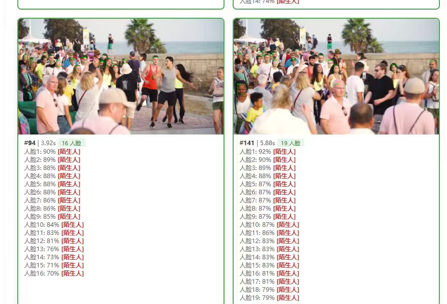
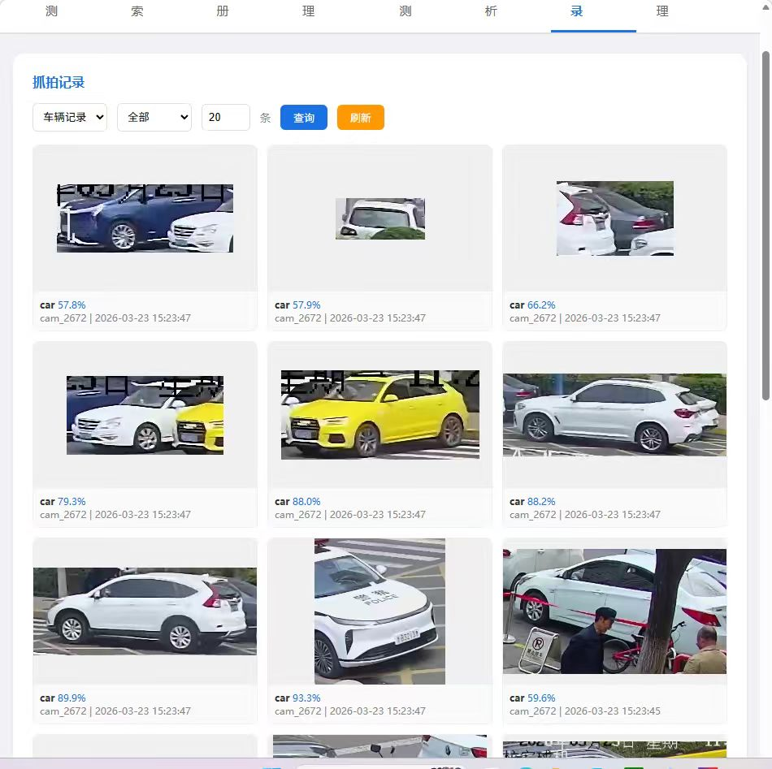
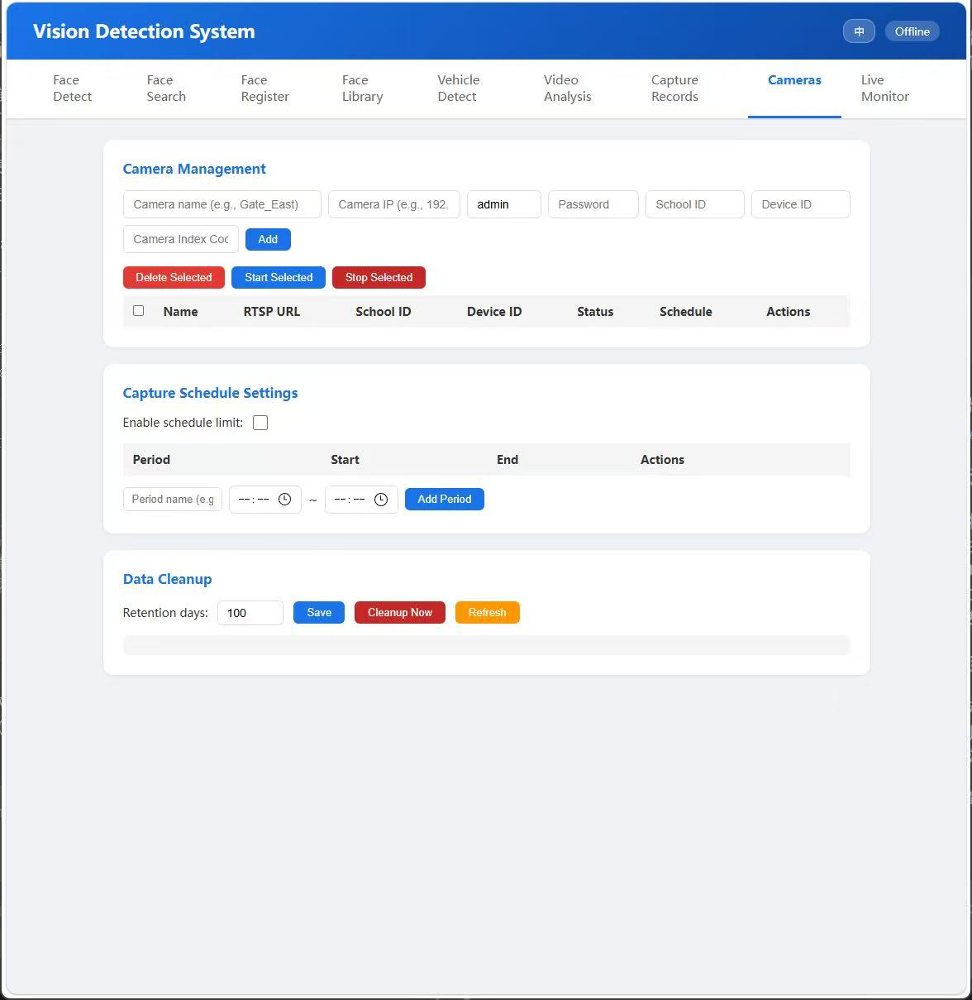
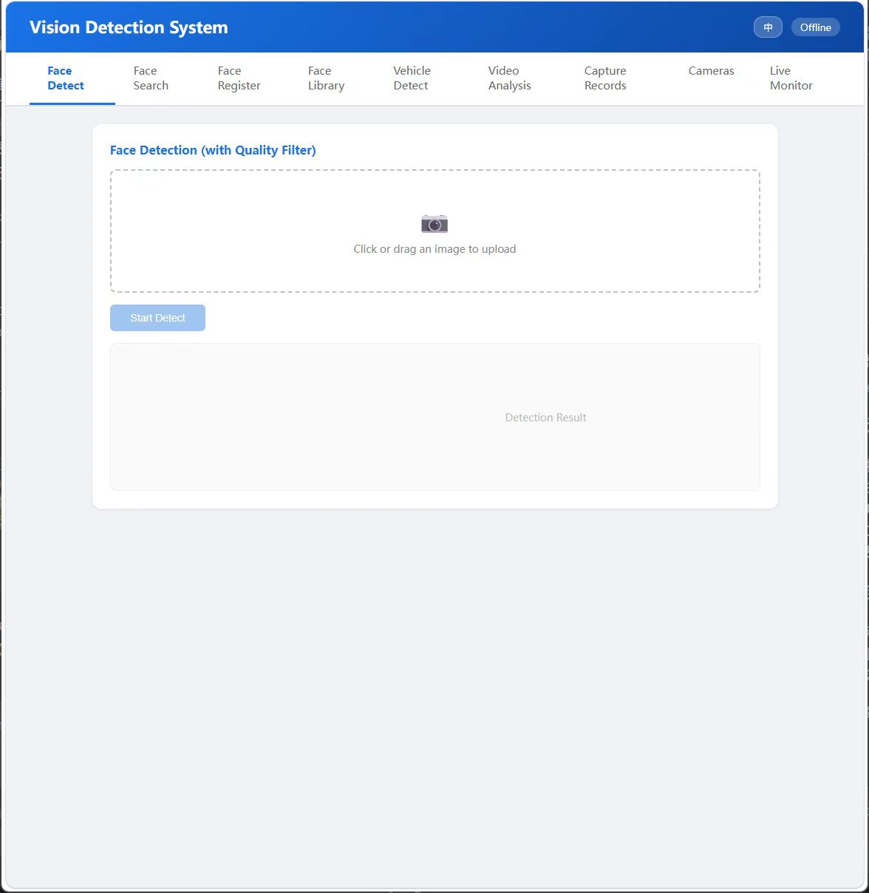

Full rebuild of a campus camera system: InsightFace + ArcFace for identity, YOLOv8m for vehicle detection, FAISS for identity search, served through FastAPI.
校园相机系统全量重构:InsightFace + ArcFace 做身份识别,YOLOv8m 做车辆检测,FAISS 做身份检索,FastAPI 提供服务。
The old system ran brittle rule-based detection with no search index. The rebuild swapped it end-to-end: fresh embeddings, a proper vector store for identity lookup, tighter model choices for vehicles, and a service API that the existing frontend could drop onto without a frontend rewrite.
旧系统是脆弱的规则检测,没有检索索引。重构把它端到端换掉:新的 embedding、正经的向量库做身份检索、更紧凑的车辆模型,以及能让旧前端直接对接的新服务 API —— 前端不用重写。



